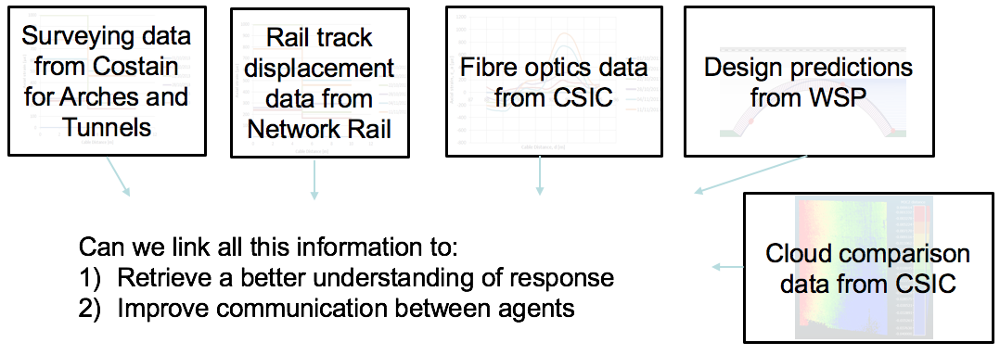
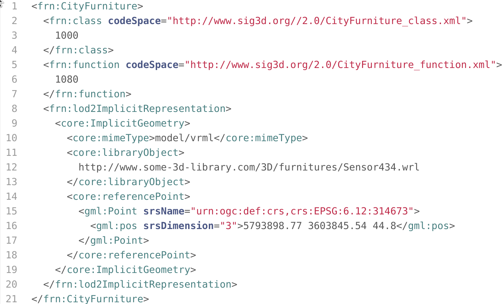
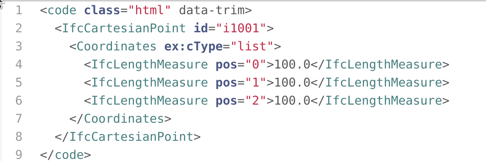
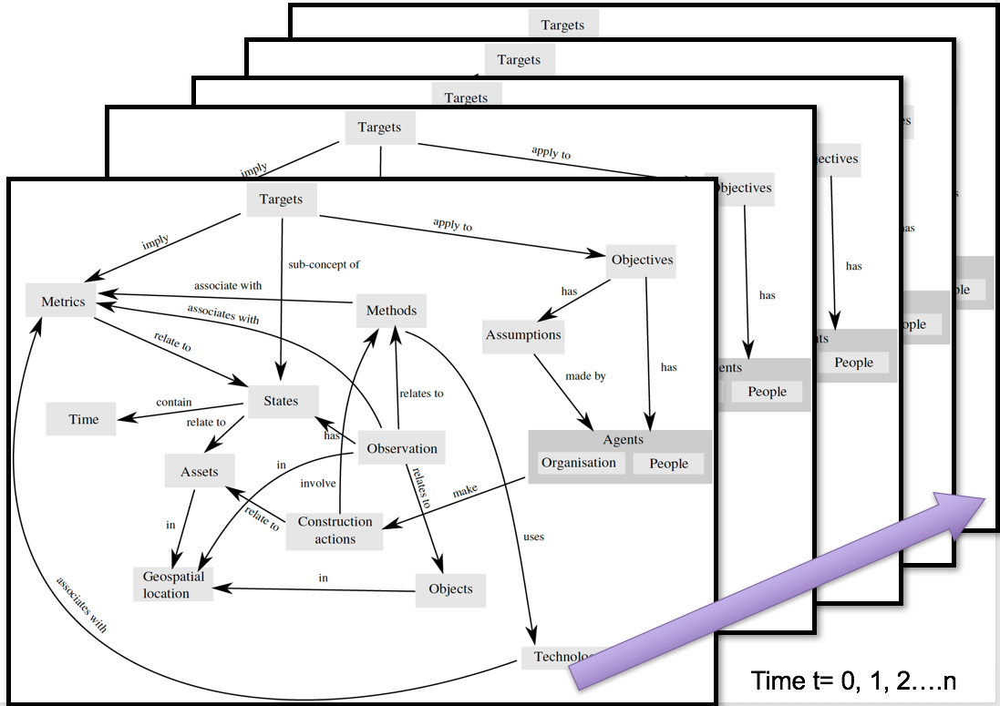

City-scale simulations and visualization

Krishna Kumar, krishnak@utexas.edu
UT Austin. 19 April 2019
Smart city

Smart (monitoring complex) infrastructure
Queries with increasing level of complexity
- At London Bridge Arch E951 area, has there been a black alarm triggered during the piles construction on dd/mm/yy hh:mm:ss?
- Is there a crack opening greater than 5mm in the arches, when the settlement values reached 50mm?
- What is the maximum displacement observed during tunneling (or other construction activity) within x meters from the pile.
- Number of data readings required for a strain profile – within a tolerance of X?
- Effect of analyzer X on scatter / noise in soil layer Y
Queries: Big, Fast and Rich

Relational database

Humidity? Vibration? 3D point cloud data? …
PostGIS
- Geographic objects to the PostgreSQL object-relational database
- Geometry types for Points, LineStrings, Polygons, MultiPoints, MultiLineStrings, MultipPolygons and GeometryCollections.
- Spatial operators for determining geospatial measurements like area, distance, length and perimeter.
- Spatial operators for determining geospatial set operations, like union, difference, symmetric difference and buffers (provided by GEOS).
v.to.db map=roads option=length type=line col=linelength units=me
Spatio-Temporal Query
- Semantic analytics tools have primarily focused on thematic relationships, but spatial and temporal relationships are often critical components in analytical domains.
- Current GIS and spatial database technology does not support complex thematic analytics operations.
- GIS - modelling and analysing spatial and temporal relationships
- Thematic entities and their relationships are not explicitly and independently represented, making analysis of these relationships difficult.

CityGML
- Open data model and an XML-based format for the storage and exchange of data.
- Common information model for the representation of sets of 3D urban objects
CityGML
Building Information Modelling

Industry Foundation Class
Smart cities standard
- Smart cities standard (PAS 182) offers a handful of generic concepts (such as place, observation, metric etc.) to formulate a common language for linking data across organizations in a city.
- The main goal is to seamlessly integrate information from multiple organisations using Linked Data (Semantic Web technology) that can be shared and edited.
- Different from BIM, Smart Cities allow for the sharing of critical but less tangible aspects that relate to the data: such as related Assumptions and Objectives.
Linked Data - Semantic Web

Linked Data - example

Linked Data - Concept model
Linked Data - Time Slices
Temporal RDF
Temporal RDF extends the RDF statement from a triple to a quad where the fourth element is the valid time of the RDF statement
Graph processing
Graph optimisation
Big Data - City scale modelling
Gerry Casey, Bing Yu, Kenichi Soga, Peter Guthrie, Elisabete Silva, Krishna Kumar and Mietek Bak
SQL v NoSQL - Google directions API

London journey times

London journey times

London journey times
Traffic saturation curves


MapReduce v In-memory
MapReduce
- Batch processing
- Larger set of data to extract features and correlations

In-memory
- Real-time predictions
- GraphX: Graph parallel computing

Agent based modelling (ABM)
Graph data structure

ABM time step

Spatial v Temporal complexity
Spatial

Temporal
ABM Architecture

- Decentralised data structures
- Graph size: ~250k nodes and ~800k edges
- ~1.5 GB (.gml) to 43 MB (.json.gz)
Dynamic computations
- Shortest path at time 't'
- Shortest path considering emissions
- Shortest path re-computation in response to an event
- 1 million agents in ~ 1 hour
Agent based modelling (ABM)
Agent based modelling

Cellular Automata (CA)


CA - Road degradation
CA - Road degradation

CA - Road degradation

Big Data visualisation
Tile based visualisation
WebGL - GLSL (Shading language)

GPU

Super computing

Alien Isolation